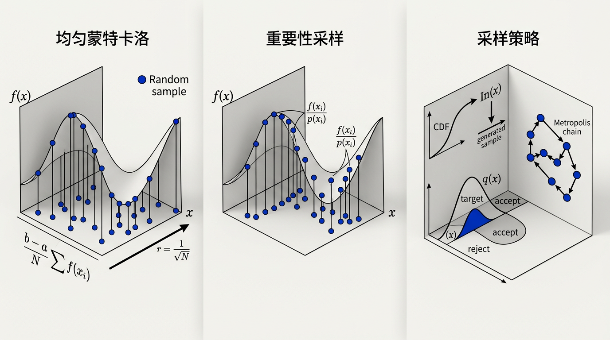
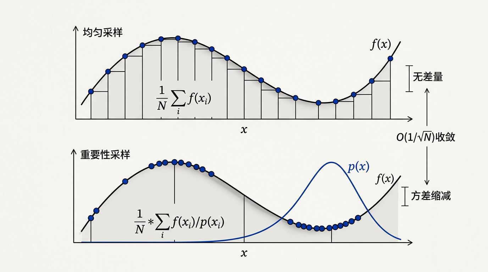

本讲义基于 Steve Marschner & Peter Shirley 所著《虎书》（Fundamentals of Computer Graphics）第5版第13章（p.352-372）蒙特卡洛积分。
用随机采样估计定积分——测度与平均值、PDF/PMF、期望与方差、重要性采样、拟蒙特卡洛 QMC、拒绝采样、Metropolis-Hastings。为 PBR 章节做基础。
本版插画采用 Guizang 材质插画风格重新绘制。

生活类比：想象你要估算一个不规则湖的面积。你可以在湖上随机扔石头（蒙特卡洛采样），数出落在湖中的石头比例，乘以整个区域的总面积。如果湖水深浅不一（被积函数变化大），你应该在深水区多扔石头（重要性采样），而不是均匀地扔——这样才能用最少的石头得到最准的估计。这就是蒙特卡洛积分的核心思想。
图形学中的许多应用需要对不寻常的空间进行"公平"采样，例如所有可能直线的空间。例如，我们需要在一个像素内生成随机边，或者根据某种密度函数在像素上生成密度变化的随机采样点。本章提供这种概率操作的机制，这些技术也将证明在数值计算复杂积分时非常有用——这正是蒙特卡洛积分所涵盖的内容。
许多计算机图形学中的计算归结为积分。渲染方程是一个积分：它汇总了场景中所有光路的贡献，在方向、表面和时间的多维域上进行积分。全局光照、柔和阴影、景深和运动模糊都涉及积分。本章发展了蒙特卡洛积分的技术——一种使用随机采样来估计积分的方法——以及使用概率工具来理解和提高这些估计质量的框架。
第 2 章在第 2.10–2.12 节中介绍了离散和连续概率以及蒙特卡洛积分的基础知识。本章深化和扩展了这些概念，为基于物理的渲染（将在第 14 章中讨论）所需的多维积分提供数学基础。我们首先回顾积分本身——其作为关于测度求平均值的含义——然后建立概率论，最后发展实用的蒙特卡洛积分技术。
虽然"积分"和"测度"这些词常常显得令人生畏，但它们关系到数学中最直观的概念，不应惧怕。在我们非常非严格的目的中，测度（measure）只是一个将子集映射到 R+（非负实数）的函数，以符合我们关于长度、面积和体积的直观概念。
例如，在二维实平面 R² 上，我们有面积测度 A，它将平面上的点集赋予一个数值。注意 A 只是一个函数，它接收平面的"片段"并返回面积。这意味着 A 的定义域是 R² 的所有可能子集，记作幂集 P(R²)。因此我们可以用箭头记号刻画 A：
A : P(R²) → R⁺
面积测度的一个应用实例：边长为 1 的正方形面积为 1：
A([a, a+1] × [b, b+1]) = 1
其中 (a,b) 只是正方形的左下角坐标。注意单个点如 (3,7) 是 R² 的有效子集，其面积为零：A((3,7)) = 0。同样，x 轴上的点集 S = {(x,y) | y = 0} 也具有零面积：A(S) = 0。这样的集合称为零测集（zero measure sets）——它们存在，但就测度而言"不占空间"。
一个函数要成为测度，必须满足以下三个条件——这些条件精准地刻画了"大小"应有的行为：
公理 1：空集的测度为零。 μ(∅) = 0。"什么都没有"的大小是 0。这是最自然的约束：例如，R 上长度测度赋予空区间长度 0；R² 上面积测度赋予空集合面积 0；任何合理的"大小"度量都应满足这条。
公理 2：非负性。 对任意可测集合 A，μ(A) ≥ 0。大小不能是负数——你不能说一个矩形有 -3 的面积。这确保了测度产生的所有值都有物理意义。
公理 3：可加性。 对任意两个集合 A 和 B：
μ(A ∪ B) = μ(A) + μ(B) − μ(A ∩ B)
其中 ∪ 是集合并运算符，∩ 是集合交运算符。这个公式的含义是：A 与 B 的总大小 = A 的大小 + B 的大小 − 它们重叠部分的大小。为什么要减去重叠？因为如果不减，重叠区域就被算了两次。举例说明：两个重叠的正方形各为面积 4，它们重叠部分的面积为 1。则并集的面积为 4 + 4 − 1 = 7（不是 8）。检查：每个 2×2 = 4，重叠 1×1 = 1，总覆盖 = 4+4−1 = √。这个公理是测度论最基本的构造原理。
公理 3（可加性）实际上可以加强为可数可加性（countable additivity）——即对可数无限个两两不交的集合，并集的测度等于测度之和。这个加强是勒贝格积分理论的基石：
若 A₁, A₂, A₃, … 两两不交（即 A_i ∩ A_j = ∅，对任意 i ≠ j），
则 μ(∪_{n=1}^{∞} A_n) = Σ_{n=1}^{∞} μ(A_n)
一个具体的证明示例：考虑单元区间 [0,1] 上的勒贝格测度（长度）。我们证明存在一个零测度的集合——即有理数集 Q ∩ [0,1]。思路：有理数是可数的，我们将第 n 个有理数 q_n 包含在一个长度为 ε/2ⁿ 的小区间中。根据可数可加性：
μ(Q) ≤ Σ_{n=1}^{∞} ε/2ⁿ = ε · Σ_{n=1}^{∞} 1/2ⁿ = ε · 1 = ε
由于 ε 可以任意小，μ(Q) 必须为零。这个巧妙的"ε/2ⁿ 覆盖技巧"是测度论中经典的零测集构造法——它揭示了一个反直觉的事实：尽管有理数在 [0,1] 中"稠密"（任何两个有理数之间都有有理数），它们的总"长度"却是零。这正是测度论区分"稠密"与"占据大部分空间"两种概念的方式。
不同应用场景需要不同的测度。以下是三类最重要的测度的对比——它们都满足相同的三个公理，但在"如何分配权重"方面有本质差异：
| 特性 | 计数测度 μ_count | 概率测度 P | 勒贝格测度 λ |
|---|---|---|---|
| 单点的测度 | μ({x}) = 1 | 连续型 P({x}) = 0 | λ({x}) = 0 |
| 有限集的测度 | = 集合元素个数 | = 各元素概率之和 | = 0（零测集） |
| 区间的测度 | ∞（无限大） | = 区间上的概率积分 | = 区间长度 |
| 归一化 | 一般不需要 | μ(全空间) = 1 | 取决于域的大小 |
| 典型应用 | 离散概率、计数问题 | 随机变量、统计推断 | 长度/面积/体积、几何 |
| 在图形学中 | 像素计数、直方图 | 采样分布、PDF归一化 | 光源面积、像素面积积分 |
为什么理解测度选择如此关键？考虑这个例子：假设要对半球上的辐照度积分 ∫_Ω L_i(ω) cos θ dω。你可以使用立体角测度 dω = sin θ dθ dφ（直接求半球立体角积分），也可以使用投影立体角测度 dω^⊥ = cos θ dω（已被 cosine 加权）。两种都是合法的测度，但积分表达式不同：使用 dω 时被积函数包含 cos θ 因子；使用 dω^⊥ 时没有。选择不同的测度 = 该因子被"吸收"进积分符号还是被积函数中——数学上等价，但哪种更方便取决于你要做什么。在渲染中，投影立体角测度往往更自然，因为它直接对应辐射通量的物理行为。
当实际计算测度时，我们通常使用积分。我们可以把积分看作一种记法：
A(S) ≡ ∫_{x∈S} dA(x)
你可以非正式地将右边读作"取区域 S 中的所有点 x，并将它们关联的微分面积求和。"这里 dA(x) 是点 x 处的无穷小面积片。积分也常用其他方式书写，包括：
∫_S dA, ∫_{x∈S} dx, ∫_{x∈S} dAx, ∫_x dx
以上所有公式都表示"区域 S 的面积"。我们坚持使用第一个，因为它足够冗长以避免歧义。要解析地计算这样的积分，我们通常需要建立某种坐标系并使用微积分技巧求解方程。但如果这些技巧已经生疏也不必担心，因为我们通常需要数值地近似积分，而这只需要第 13.3 节中描述的简单技术。
给定集合 S 上的一个测度，我们总是可以通过非负函数 w : S → R⁺ 加权来创建一个新的测度。这在积分记号中表达得最好。例如，从 [0,1]² 上简单的面积测度出发：
∫_{x∈[0,1]²} dA(x)
我们通过插入半径平方的权重函数来使用"径向加权"测度：
∫_{x∈[0,1]²} ‖x‖² dA(x)
要解析计算这个积分，我们使用笛卡尔坐标系展开，其中 dA ≡ dx dy：
∫_{x∈[0,1]²} ‖x‖² dA(x) = ∫_{x=0}^{1} ∫_{y=0}^{1} (x² + y²) dx dy
这里的要点是：如果你把 ‖x‖² 项看作与 dA 项"结合在一起"、共同构成一个新的测度 ν，那么我们就可以写成 ν(S) 而不必每次都写出整个积分。如果这让你觉得只是一堆记号和簿记——你说得对。但它确实让我们可以根据偏好写出紧凑或展开的方程。
测度的真正威力在取函数的平均值时开始显现。你只能关于某个特定测度取平均值，并且你希望选择一个对应用或领域"自然"的测度。一旦选定测度，函数 f 在区域 S 上关于测度 μ 的平均值（average）定义为：
average(f) ≡ ∫_{x∈S} f(x) dμ(x) / ∫_{x∈S} dμ(x)
这个公式的含义非常直观。分子 ∫ f dμ 是 f 在 S 上的"加权总和"——每个 x 处的函数值按其测度贡献加权。分母 ∫ dμ 是区域 S 的"总大小"（关于测度 μ 的）。平均值 = 加权总和 ÷ 总大小。
生活类比：考试的平均分 = 所有人的总分 ÷ 总人数。这里 ∫ f dμ 是"总分"，∫ dμ 是"总人数"（即域的大小），average(f) 就是"加权平均分"。
为什么必须除以 ∫ dμ（归一化）？一个深刻的直觉：
设想一个很简单的函数 f(x) = 1（常函数）。在任意域 S 上，这个函数"处处相同"。物理直觉告诉我们它的平均值应该就是 1——无论域有多大。验算：
average(1) = ∫_S 1 · dμ / ∫_S dμ = μ(S) / μ(S) = 1 ✓
如果不除以分母，平均值就会变成 μ(S) ——依赖于域的大小，而不是被积函数本身。这说明分母的作用是"消除域大小的影响"，使我们能孤立地讨论"函数是在哪里更大"。用通俗的语言说：积分测度 ∫ dμ 扮演了"计数器"的角色——它记下了我们对多少"东西"求了平均值。
还有另一种直觉视角：平均值的公式可以重新排列为：
∫_S f(x) dμ(x) = average(f) · ∫_S dμ(x)
这就是说：f 在 S 上的积分 = f 的平均值 × S 的大小。这条平凡的恒等式正是蒙特卡洛积分的本质——用平均值来估计总积分。如果你知道域的大小（分母），且能估计平均值（分子/分母），你就能估计整个积分。这就是蒙特卡洛用随机样本来"测平均值"的底层逻辑。
例如，函数 f(x,y) = x² 在 [0,2]² 上关于面积测度的平均值：
average(f) ≡ (∫_{x=0}^{2} ∫_{y=0}^{2} x² dx dy) / (∫_{x=0}^{2} ∫_{y=0}^{2} dx dy) = 4/3
计算过程：分母 = ∫₀²∫₀² dx dy = 2 × 2 = 4（正方形面积）。分子 = ∫₀²∫₀² x² dx dy = ∫₀² x² dx · ∫₀² dy = (8/3) · 2 = 16/3。平均值 = (16/3) / 4 = 4/3。
这个概念自然地出现在想要找到表面上接收到的平均辐照度时。许多重要的量是定义在整个半球上的积分，必须被正确归一化。例如，给定 BRDF f_r 的反射率（albedo）：
albedo = ∫_Ω f_r(ω_i, ω_o) cos θ_i dω_i / ∫_Ω cos θ_i dω_i
分母正是我们在第 2.5.2 节中看到的 ∫_Ω cos θ_i dω_i = π。这里，cos θ_i 来自辐射度学中的投影面积因子——斜射光线分布到更大的面积上，因此每个方向的有效贡献按 cos θ 缩减。
加权平均（weighted average）引入权重函数 w(x) ≥ 0：
weighted_average(f) = ∫_Ω f(x) w(x) dμ(x) / ∫_Ω w(x) dμ(x)
权重函数将积分集中在我们最关心的区域——在渲染中，意味着将计算资源集中在最重要的光路上。当 w(x) 选为被积函数本身（假设 f ≥ 0）时，加权平均变为：
weighted_average(f) = ∫ f(x)·f(x) dμ / ∫ f(x) dμ = ∫ f² dμ / ∫ f dμ
这不是一个特殊的量——但它揭示了一个深刻的联系：重要性采样（第 13.3 节）正是通过选择 w(x) ∝ f(x) 来最大化每个样本的信息量。如果 w 恰好等于 f，那么加权平均中的每个样本贡献都完全相同——这直接通向"零方差"的蒙特卡洛估计。
想一想：如果权重函数 w(x) 恰好等于被积函数 f(x) 本身（假设 f ≥ 0），加权平均会变成什么？这和"零方差"的蒙特卡洛估计有什么关联？
积分几何（integral geometry）是研究几何实体（如直线和平面）上测度的领域，它将我们关于测度的讨论带入了一个实用的高度。考虑一个看似简单的问题：在正方形 [0,1]² 中如何"公平"地选择一条随机直线？这个问题的核心是：直线的参数化方式决定了"均匀"的含义。
一种参数化使用法线坐标：每条（无方向）直线由它到原点的有符号距离 r 和法线的角度 θ 描述。对于与单位正方形相交的直线，θ ∈ [0, π) 而 r 被一个依赖于 θ 的上界 r_{max}(θ) 约束。在法线空间中，直线的"公平"（均匀）测度是：
dμ = dr dθ
为什么是 dr dθ 而不是某个更复杂的表达式？因为当我们对直线进行刚体运动（平移 + 旋转）时，法线空间中的这个测度保持不变——它是唯一在刚体运动下不变的直线测度。
另一种参数化使用两个平行平面：如果直线与平面 z=0 相交于 (x=u, y=v)，与平面 z=1 相交于 (x=s, y=t)，则直线可由四元组 (u,v,s,t) 描述。对于几乎平行于 z 轴的直线束，微分测度可以近似为：
dμ ≈ du dv ds dt
这个测度常常隐式地用于基于图像的渲染中。
对于与球体相交的直线集合，我们可以使用球面相交的两个点的参数化。如果用球坐标表示，则这两个点可由四元组 (θ₁, φ₁, θ₂, φ₂) 描述，测度就是每个点关联的微分面积：
dμ = sin θ₁ dθ₁ dφ₁ · sin θ₂ dθ₂ dφ₂
这意味着在球面上选两个均匀随机端点，就得到一条密度均匀的直线。这一观察被 Mateu Sbert 在其博士论文 (Sbert, 1997) 中用于计算形状因子。
想一想：为什么立体角的测度是 dω = sin θ dθ dφ，而不是简单的 dθ dφ？如果只是 dθ dφ，那极点和赤道上的"单位角"对应球面上的面积还一样吗？球面的完整推导见下文。
立体角测度 dω = sin θ dθ dφ 是辐射度学和渲染中最常用的测度之一。为什么它是这个形式？我们从球面坐标的几何出发。
三维空间中一个从原点出发的方向由两个角参数化：极角 θ ∈ [0, π]（从正 z 轴向下测量）和方位角 φ ∈ [0, 2π)（在 xy 平面中从 x 轴测量）。该方向上的单位向量是：
r̂ = (sin θ cos φ, sin θ sin φ, cos θ)
现在考虑球面上一个由微小变化 dθ 和 dφ 产生的无穷小面积元。当我们沿 θ 方向移动 dθ 时，我们在球面上移动的距离是 dθ（球半径 = 1，弧长 = 半径 × 角度）。但当我们沿 φ 方向移动 dφ 时，移动的距离不是 dφ——而是 sin θ · dφ。为什么？因为 φ 方向上的运动发生在纬线上，纬线是一个半径为 sin θ 的圆（当 θ = 0 即北极时，纬线退化为一个点，半径为 0；当 θ = π/2 即赤道时，纬线是大圆，半径为 1）。
因此，球面上无穷小面元的面积为两个边长之积：
dω = (dθ) · (sin θ dφ) = sin θ dθ dφ
验证：对整个球面积分这个测度应该得到球的表面积 4π：
∫_{φ=0}^{2π} ∫_{θ=0}^{π} sin θ dθ dφ = ∫_{0}^{2π} dφ · ∫_{0}^{π} sin θ dθ = 2π · [−cos θ]_{0}^{π} = 2π · 2 = 4π ✓
如果使用 dθ dφ（没有 sin θ 因子），积分结果将是 ∫₀²ᵖ dφ · ∫₀ᵖ dθ = 2π × π = 2π² ≠ 4π——这在物理上是错误的。sin θ 因子精确地补偿了球面纬线在极点和赤道之间半径的变化。
在辐射度学中，投射立体角进一步引入 cos θ 因子：dω^⊥ = cos θ sin θ dθ dφ = cos θ dω。这里 cos θ 来自 Lambert 定律——斜射光线分布到更大的实际表面上，因此每个单位固体角的辐射通量按 cos θ 缩减。
许多图形学算法使用概率来构造随机样本，以解决积分和平均问题。这是应用连续概率的领域，它与测度论有基本的联系。要理解蒙特卡洛积分，必须理解连续概率——样本 x_i 正是从定义在积分域上的概率分布中抽取的。
随机变量 X 的行为完全由它的概率分布描述，记作 x ∼ p，读作"x 服从分布 p"。概率的框架给积分问题提供了采样视角：从分布 p 中抽取样本，用这些样本来估计涉及任意函数的积分。
连续随机变量 x 是一个标量或向量，它"随机地"从实线 R = (−∞, +∞) 中取值。x 的行为完全由它取值的分布描述。这个分布可以由与 x 关联的概率密度函数（probability density function，PDF）p 定量描述（关系记作 x ∼ p）。
物理类比（质量密度 vs 概率密度）：概率密度函数和物理学中的质量密度有着精确的类比。一根非均匀金属棒的密度函数 ρ(x) 给出了每单位长度的质量——在任意一点 x，ρ(x) 本身不是质量，而是质量的集中度。要得到某段区间上的质量，你必须积分：质量 = ∫ ρ(x) dx。同样地，PDF p(x) 给出了概率的"集中度"——在任意单点，p(x) 不是概率（单点的概率总是 0），但积分后得到概率：Probability(x ∈ [a,b]) = ∫_a^b p(x) dx。正如密度 ρ(x) 可以大于 1（只要积分是总质量），p(x) 也可以大于 1（只要总积分为 1）。
生活类比：假如你站在公交站，记录每辆公交车到达的时间。你不会问"第 3.14159 分钟来车的概率是多少"——那永远为零。你会问"在 3 到 4 分钟之间来车的概率是多少"。这就是连续概率的核心：概率密度本身不是概率，必须积分后才得到概率。
X 落在区间 [a,b] 中的概率是 PDF 在该区间上的积分：
Probability(x ∈ [a,b]) = ∫_a^b p(x) dx (13.1)
PDF 必须满足两个关键约束：
p(x) ≥ 0 （概率非负） (13.2)
∫_{-∞}^{∞} p(x) dx = 1 （总概率为 1） (13.3)
为什么 PDF 必须满足这两个约束？——一个验证性推导：
约束 1：非负性 p(x) ≥ 0。 概率不能是负数——不存在"负的可能"。如果某个 x 处 p(x) < 0，那么对包含该点的足够小区间积分会得到负概率，这在物理上没有意义。但 p(x) 可以大于 1——记住 p(x) 是密度而非概率。类比物理：一根 0.1 米长的重棒，质量 10 公斤，线密度 ρ = 10/0.1 = 100 公斤/米——密度远超 1，但积分后是总质量。同样，PDF 只要积分 = 1 即可。
约束 2：总概率 ∫ p(x) dx = 1。 随机变量从整个定义域中必须取某个值——这个必然事件的概率是 1。如果你定义 p(x) = c · e^{-x²}（高斯形状）但没有归一化（即 c ≠ 1/√π），那么 ∫ p dx ≠ 1，就不是合法的 PDF。在实际应用中，c 正是归一化常数——它是我们通过计算积分确定的。
一个完整的验证例子：设在 [0, a] 上定义 p(x) = kx（k > 0），区间外为 0。问：k 应该是多少才能让 p 成为合法的 PDF？
约束 1：p(x) = kx ≥ 0 在 [0,a] 上 → k ≥ 0 ✓ 约束 2：∫_0^a kx dx = k·(a²/2) = 1 → k = 2/a²
因此合法的 PDF 是 p(x) = 2x/a²（在 [0,a] 上）。验证：∫_0^a (2x/a²) dx = [x²/a²]_0^a = a²/a² = 1 ✓。直观：k = 2/a² 越大（a 越小），密度在原点附近越集中；a 越大，密度越分散。归一化常数精确补偿了区间宽度的变化。
粗略地说，概率密度函数 p 描述了一个随机变量取特定值的"相对可能性"。如果 p(x₁) = 6.0 而 p(x₂) = 3.0，那么密度为 p 的随机变量取值"接近" x₁ 的可能性是取值接近 x₂ 的两倍。
一个特别重要的分布是 [0,1) 区间上的均匀分布（uniform distribution）。典范随机变量 ξ 在 [0,1) 上以均匀概率取值（均匀意味着每个 ξ 的值都是等可能的）：
q(ξ) = 1 对于 ξ ∈ [0,1)，否则 q(ξ) = 0
均匀分布是生成所有其他分布的基础构造块——从均匀分布中采样，然后通过函数反演（第 13.4.1 节）或拒绝采样（第 13.4.2 节）变换到目标分布。ξ 落在 [a,b] ∈ [0,1) 中的概率恰好是 b−a——这正是均匀性的直接体现。
随机变量 X 的一个实值函数 f 将取的平均值称为其期望值（expected value），E(f(x))（有时写作 Ef(x)）：
E[f(X)] = ∫ f(x) p(x) dx (13.4)
随机变量 X 本身的期望值可以通过设 f(x) = x 来计算：
E[X] = ∫ x · p(x) dx
期望值有一个惊人且极其有用的性质：期望值的线性性。两个随机变量之和的期望等于各自期望之和：
E[aX + bY] = aE[X] + bE[Y]
线性性的完整证明：假设 X 有 PDF p_X(x)，Y 有 PDF p_Y(y)。令 Z = aX + bY。那么：
E[aX + bY] = ∫∫ (ax + by) p_{X,Y}(x,y) dx dy
= a∫∫ x p_{X,Y}(x,y) dx dy + b∫∫ y p_{X,Y}(x,y) dx dy
= a∫ x [∫ p_{X,Y}(x,y) dy] dx + b∫ y [∫ p_{X,Y}(x,y) dx] dy
= a∫ x p_X(x) dx + b∫ y p_Y(y) dy
= aE[X] + bE[Y]
关键步骤：在第一行中使用了联合 PDF p_{X,Y}；在第三行中对 y 进行边缘化得到边缘 PDF p_X(x)；在第四行中使用了期望值的定义。
关键洞察：线性性不论 X 和 Y 是否独立都成立！这是最容易被忽视但又最重要的性质。即使 X 和 Y 高度相关（不独立），E[X+Y] = E[X] + E[Y] 仍然严格成立。这个求和性质对大多数蒙特卡洛应用至关重要——它意味着我们可以对复杂积分的各个分量进行独立采样并求和，而无需担心分量之间的相关性。
因为随机变量的函数本身也是随机变量，期望的线性性同样适用：
E[f(x) + g(y)] = E[f(x)] + E[g(y)]
函数 f(X) 的期望值——这是蒙特卡洛积分的数学核心——由公式 (13.4) 给出。注意相似性：如果我们可以估计 E[f(X)]，我们就可以估计 ∫ f(x) dx。这就是蒙特卡洛积分的全部本质——用采样估计期望值，期望值给出积分。
想一想：公式 (13.4) 中，如果 p(x) 是均匀分布（p(x)=1），E[f(X)] 就直接等于 ∫ f(x) dx。但如果 p(x) 不是均匀的呢？E[f(X)] 还等于积分吗？
对随机变量及其期望值的讨论自然地推广到多维空间。大多数图形学问题将在这种高维空间中。例如，许多光照问题在半球面上表述。幸运的是，如果我们在随机变量所在的空间上定义一个测度 μ，一切与一维情况非常相似。
假设空间 S 有关联的测度 μ；例如 S 是球面而 μ 测量面积。我们可以定义一个 PDF p : S → R，如果 x ∼ p 是一个随机变量，那么 x 取某区域 S_i ⊂ S 中的值的概率由积分给出：
Probability(x ∈ S_i) = ∫_{S_i} p(x) dμ
在图形学中，S 通常是面积（dμ = dA = dx dy）或一组方向（单位球面上的点：dμ = dω = sin θ dθ dφ）。多维期望值的公式为：
E[f(x)] = ∫_S f(x) p(x) dμ
独立性的乘积分解：多个随机变量 X₁, X₂, …, X_n 的联合概率密度函数（joint PDF）p(x₁, …, x_n) 描述了一组值同时出现的可能性。如果随机变量是独立的，联合 PDF 可分解为乘积：
p(x₁, …, x_n) = p(x₁) · p(x₂) · … · p(x_n)
这是独立性最实用的形式。为什么这个分解成立？因为独立性意味着一个变量的取值不影响其他变量的取值——每个变量的行为完全由自身的边缘分布描述。这等同于说联合概率 = 各边缘概率的乘积。
前提和局限：乘积分解成立的前提是测度 μ 也可以分解为各维测度的乘积（例如 dμ = dx₁ dx₂ … dx_n）。如果测度本身不能分解（例如球面上的测度 dω = sin θ dθ dφ 中 θ 和 φ 是耦合的），即使随机变量名义上独立，PDF 的分离形式也可能无效。
独立性极大地简化了多维采样——可以独立地为每个维度生成样本再组合。然而，图形学中许多情况——半球采样、BRDF 重要性采样——随机变量并不独立。例如，在 Phong 式分布的半球采样中，θ 和 φ 从联合 PDF p(θ,φ) = (n+1)/(2π) cos^n θ 中采样。这里有两点要注意：(1) dω 测度引入了 sin θ 耦合；(2) 虽然 PDF 在 θ 和 φ 上可分离，但采样变换需要小心处理 sin θ 因子。多维采样在这些情况下需要更复杂的策略（第 13.4 节）。
联合 PDF 的通用分解：边缘 PDF 与条件 PDF。 当随机变量不独立时，有一个标准的分解方法将联合 PDF 拆解为可管理的形式：
p(x, y) = p(x) · p(y | x)
其中 p(x) 是边缘 PDF（marginal PDF），定义为对另一个变量"积分掉"后的剩余：
p(x) = ∫ p(x, y) dy
而 p(y | x) 是条件 PDF（conditional PDF）——在已知 x 的前提下 y 的分布。当且仅当 p(y | x) = p(y)（即条件 PDF 与条件无关）时，X 和 Y 是独立的，此时 p(x, y) = p(x) · p(y)。
一个具体的二维例子（非独立情况）：p(x, y) = 6xy² 在单位正方形 [0,1]² 上。
虽然看起来 p(y|x) 与 x 无关，但验证乘积：p(x)·p(y) = 2x · 3y² = 6xy² = p(x,y) ✓——所以实际上它们是独立的！这个例子说明：判断独立性需要验证乘积分解，而非仅凭直觉。
在渲染场景中，条件-边缘分解的实际应用：采样 BRDF 时，先按照边缘分布 p(θ) 采样极角（θ 的分布积分掉了 φ 的信息），然后以此 θ 为条件按条件分布 p(φ | θ) 采样方位角。这是"两步法"采样高维分布的通用策略，它在函数反演（第 13.4.1 节）中反复出现。
生活类比：两个独立骰子同时掷出 (3,5) 的概率 = 掷出 3 的概率 × 掷出 5 的概率 = 1/6 × 1/6 = 1/36。但如果骰子被磁化后相互影响（不独立），你就不能简单相乘了——需要知道它们的联合行为。
一个二维例子：考虑在单位正方形 S = [0,1] × [0,1] 上定义的联合 PDF p(x, y) = 4xy。对于 (x,y) ∼ p，x 坐标的期望值为：
E[x] = ∫_S x · p(x,y) dA
= ∫_{0}^{1} ∫_{0}^{1} 4x²y dx dy
= ∫_{0}^{1} 4y · (x³/3)|_{0}^{1} dy
= ∫_{0}^{1} (4y/3) dy = 4/3 · (1/2) = 2/3
注意这个结果（2/3 > 1/2）说明分布偏向较大的 x 值——因为 p(x,y) = 4xy 在右上角更大，样本更可能落在 x 较大的区域。
方差（variance）V[X] 衡量随机变量围绕其期望值的展布程度：
V[x] ≡ E[(x − E[x])²]
通过代数变换，我们得到计算上更方便的等价表达式：
V[x] = E[x²] − (E[x])² (13.6)
推导：令 μ = E[x]。则： V[x] = E[(x − μ)²] = E[x² − 2μx + μ²] 利用期望的线性性： = E[x²] − 2μE[x] + μ² 代入 μ = E[x]： = E[x²] − 2E[x]·E[x] + (E[x])² = E[x²] − (E[x])²。证毕。
这个恒等式在蒙特卡洛积分中非常实用——你只需要累积 Σx_i 和 Σx_i² 就能计算方差，无需存储所有样本后再算第二次均值。
标准差 σ = √V[X] 具有与 X 相同的单位，在实践上更具可解释性。对于蒙特卡洛积分——N 个独立样本 X_i 被平均——独立随机变量之和的方差等于方差之和：
V[X̄_N] = V[(1/N) Σ X_i] = (1/N²) · N · V[X] = V[X] / N (13.7)
这意味着标准差（误差的预期尺度）按照 σ/√N 减小。将噪声减半需要四倍的样本；减少到十分之一需要一百倍的样本。这就是递减回报（diminishing return）——蒙特卡洛的根本局限性。这也是重要性采样等方差缩减技术如此重要的原因——它们通过使每个样本贡献更多信息来降低有效 V[X]。
想一想：假设你有两种采样策略：策略 A 的 V[X]=100，策略 B 的 V[X]=1。要达到相同的估计精度，策略 A 需要多少倍的样本？（提示：看公式 13.7）
实践中，我们几乎从不确切知道期望值或方差——必须从样本中估计。给定 N 个独立同分布（iid）的随机变量 X₁, …, X_N，它们共享一个共同的密度 p，当和除以变量个数时，我们得到 E[x] 的一个估计：
E[x] ≈ (1/N) · Σ_{i=1}^{N} x_i
这是均值的一个无偏估计（unbiased estimate）：E[μ̂] = μ——期望值恰好等于真实均值。随着 N 增加，这个估计的方差减小。我们想要 N 足够大，以便有把握估计"足够接近"。大数定律（Law of Large Numbers）表达了这种把握：
Probability(lim_{N→∞} (1/N) Σ_{i=1}^{N} x_i = E[x]) = 1
更一般地，均值的无偏估计为：
μ̂ = (1/N) · Σ_{i=1}^{N} X_i (13.8)
贝塞尔校正（Bessel's correction）的完整推导：为什么方差的无偏估计用 N−1 而不是 N？
首先，如果已知真实均值 μ（而不是用样本估计的 μ̂），方差的无偏估计确实是 (1/N) Σ(x_i − μ)²。根据定义，E[(x_i − μ)²] = σ²，因此这个估计的期望值 = σ²。
但当我们用 μ̂ 替换 μ 时，情况变了。μ̂ 本身是从同一组样本计算出来的——它已经"消耗"了一个自由度。展开：
Σ(x_i − μ̂)² = Σ[(x_i − μ) − (μ̂ − μ)]²
= Σ(x_i − μ)² − 2(μ̂ − μ)Σ(x_i − μ) + N(μ̂ − μ)²
= Σ(x_i − μ)² − 2N(μ̂ − μ)² + N(μ̂ − μ)²
= Σ(x_i − μ)² − N(μ̂ − μ)²
取期望值：E[Σ(x_i − μ̂)²] = Nσ² − N·(σ²/N) = (N−1)σ²。因此用 N−1 归一化才能得到无偏估计：
σ̂² = (1/(N−1)) · Σ_{i=1}^{N} (X_i − μ̂)² (13.9)
步骤详解——为什么中间那步要这样做？
第 1 步：拆开残差。 x_i − μ̂ = (x_i − μ) − (μ̂ − μ)。真实离差 = 总离差 − 均值估计误差。这一步相当于坐标系平移：将每个数据点从"与真实 μ 的距离"重写成"与样本均值 μ̂ 的距离"。
第 2 步：展开平方。 Σ(a − b)² = Σa² − 2bΣa + N b²。这里 a = x_i − μ，b = μ̂ − μ。关键注意到 Σ(x_i − μ) = N(μ̂ − μ)——这是"样本均值与真实均值的差距乘以 N"。
第 3 步：代入消元。 −2(μ̂ − μ) · N(μ̂ − μ) + N(μ̂ − μ)² = −2N(μ̂ − μ)² + N(μ̂ − μ)² = −N(μ̂ − μ)²。
第 4 步：取期望。 E[Σ(x_i − μ)²] = Nσ²（每个 x_i 独立同分布，方差 σ²）。E[N(μ̂ − μ)²] = N · (σ²/N) = σ²——因为样本均值的方差是 σ²/N。两者相减得 (N−1)σ²。
第 5 步：无偏性验证。 如果用 N 归一化：E[(1/N) Σ(x_i − μ̂)²] = (N−1)/N · σ² ≠ σ²——系统性地低估了 σ²。用 N−1 归一化：E[(1/(N−1)) Σ(x_i − μ̂)²] = σ² ✓。
"自由度"的直觉：有 N 个数据点，但我们已经用数据"消耗"了一个未知量（均值——为了计算残差必须先知道均值，而且这个均值是从同一组数据中拟合出来的）。本质上，Σ(x_i − μ̂) 中包含了 N 个带约束的数据——约束是 Σ(x_i − μ̂) = 0——所以自由度是 N−1。N−1 分母将平方和除以自由度数，而非数据点数。
直观上：μ̂ 被拟合到了数据上，使得残差 x_i − μ̂ 系统性地小于真实的 x_i − μ。N−1 因子精确地补偿了这种系统性的低估。值得注意的是，N−1 给出的 σ̂² 是无偏的，但 σ̂（标准差）仍然是有偏的（因为平方根不是线性操作）。
这些估计值是蒙特卡洛渲染的基础：每个像素颜色 = 到达该像素的许多光路样本的均值。置信区间——以约 95% 的置信度，真实均值落在 μ̂ ± 2σ̂/√N 的范围内——告诉我们估计有多可靠。
在本节中，概述定积分的基本蒙特卡洛求解方法。然后这些技术被直接应用于某些积分问题。
如前所述，给定函数 f : S → R 和随机变量 x ∼ p，我们可以通过求和近似 f(x) 的期望值：
E[f(x)] = ∫_{x∈S} f(x) p(x) dμ ≈ (1/N) Σ_{i=1}^{N} f(x_i) (13.10/13.4)
因为期望值可以表示为积分，积分同样被这个和近似。但公式 (13.10) 的形式有些别扭——我们通常希望近似一个单独函数 g 的积分，而非乘积 f·p。我们通过代入 g = f·p 作为被积函数来实现：
∫_{x∈S} g(x) dμ ≈ (1/N) Σ_{i=1}^{N} g(x_i) / p(x_i), x_i ∼ p (13.11/13.5)
要使这个公式有效，p 必须在 g 非零时为正。
蒙特卡洛积分（Monte Carlo integration）使用随机采样来估计定积分。基本估计器：从 Ω 上的均匀分布中抽取 N 个独立样本 x_i，计算：
∫_Ω f(x) dμ(x) ≈ (μ(Ω) / N) · Σ_{i=1}^{N} f(x_i)
除以 μ(Ω) 对域的总大小进行归一化。当域是标准区间 [0,1] 时，μ([0,1]) = 1，公式简化为 (1/N) Σ f(x_i)。
蒙特卡洛估计器 f̂ = (1/N) Σ f(x_i)/p(x_i) 是无偏的（unbiased）：无论使用多少样本，期望值恰好等于真实积分。（它也是一致的 consistent：N → ∞ 时 f̂ 以概率 1 收敛到真实积分。）
证明：对任意单个样本 x_i ∼ p，考虑其贡献 f(x_i)/p(x_i) 的期望值：
E[f(x_i)/p(x_i)] = ∫_S [f(x)/p(x)] · p(x) dμ
= ∫_S f(x) dμ
p(x) 在分子和分母中相互抵消！这就是重要性采样的魔法——不论 p 是什么（只要在 f 非零时为正），单个样本的期望值总是恰好等于积分。
现在取 N 个独立样本的均值：
E[f̂] = E[(1/N) Σ f(x_i)/p(x_i)]
= (1/N) Σ E[f(x_i)/p(x_i)] （利用期望的线性性——无论是否独立！）
= (1/N) · N · ∫_S f(x) dμ
= ∫_S f(x) dμ
证毕。这个证明揭示了蒙特卡洛的两个基本支柱：(1) 单个样本的期望值通过 p(x) 的抵消恰好给出积分；(2) 期望值的线性性确保 N 个样本均值的期望值仍然是积分。
逐步拆解——为什么每一步都成立？
第 1 步：单样本期望。考虑从 p 中抽取的任意单个样本 x。其蒙特卡洛贡献是 f(x)/p(x)。这个量的期望值 = ∫ [f(x)/p(x)] · p(x) dμ。注意 p(x) 同时出现在"被用来衡量的密度"位置和"贡献的分母"位置——它们精确地相互抵消：
E[单个样本贡献] = ∫_S f(x) dμ // p(x) 抵消！
这一步说明了为什么蒙特卡洛估计器需要除以 p(x)：正是因为期望算子需要对 p(x) 求积分——除以 p(x) 确保了 p(x) 在积分中被消去，留下纯粹的 f(x)。任何"除以密度"的操作本质上都是在对样本进行"逆加权"——样本来自密度大的区域时除以大的 p(x)（降低贡献），来自密度小的区域时除以小的 p(x)（放大贡献），从而恢复均匀的平均效果。
第 2 步：N 样本均值。蒙特卡洛估计器是 N 个独立样本贡献的平均值：
f̂_N = (1/N) · [f(x₁)/p(x₁) + f(x₂)/p(x₂) + … + f(x_N)/p(x_N)]
对 N 样本均值取期望值：
E[f̂_N] = E[(1/N) Σ_i f(x_i)/p(x_i)]
= (1/N) · Σ_i E[f(x_i)/p(x_i)] // 期望线性性：E[X+Y] = E[X] + E[Y]
= (1/N) · Σ_i ∫_S f(x) dμ // 每个样本的期望都是积分
= (1/N) · N · ∫_S f(x) dμ // 恰好 N 个相同的项
= ∫_S f(x) dμ // N 抵消 ✓
第 3 步：一致性的含义。无偏性（E[f̂] = 真实值）保证我们"平均来说是对的"。一致性（N → ∞ 时 f̂ 趋向真实值）保证我们"用了足够多样本后一定是接近的"。两者加在一起意味着：更多的样本 = 更高的可靠度，不存在隐性的系统性错误。这是蒙特卡洛被广泛信赖的根本原因。
蒙特卡洛的决定性优势是收敛与维度无关。确定性求积法（梯形法则、辛普森法则）的误差按 O(N^{-2/d}) 缩放——d 是维度——在高维中灾难性地差。蒙特卡洛在所有维度上以 O(1/√N) 收敛。这就是为什么它是渲染中高维光传输积分的唯一可行方法。
O(1/√N) 的确切来源：蒙特卡洛估计器 f̂_N 的方差 = V[f]/N（第 13.2.4 节公式 13.7）。误差的量度是标准误差（standard error）：SE[f̂_N] = σ[f]/√N。大数定律保证 N → ∞ 时 f̂_N → 真实值；中心极限定理告诉我们 f̂_N 的分布近似高斯分布，其标准差正好按 1/√N 衰减。
为什么要到 N 很大才能消除噪声：按 1/√N 衰减意味着：
| 噪声减少到原来的 | 需要的样本倍数 | 渲染实例（64 spp 基准） |
|---|---|---|
| 1/2（减半） | 4× | 256 spp |
| 1/10 | 100× | 6,400 spp |
| 1/100 | 10,000× | 640,000 spp |
这解释了为什么渲染器永远在"加样本"——在低噪声区域进步很快，但要消除残留噪声需要几何级数增加的样本。这也说明了为什么方差缩减技术（重要性采样、分层采样、控制变量）如此关键：你要先降低 σ[f]（每个样本的方差），然后才让 1/√N 去完成剩余的工作。
为什么与维度无关？——与确定性方法的对比：
考虑估计 ∫_{[0,1]^d} f(x) dx（d 维单位超立方体上的积分）。确定性求积法将这 d 维空间分割为每个维度 n 个点的规则格点，总共 n^d 个求积节点。其误差界限通常为 O(n^{-k/d}) 或更具体地 O(N^{-k/d})（其中 N = n^d 是总点数，k 由方法阶数决定）。
具体地，在 d 维空间中：
转折点（cross-over）大约在 d = 4：当维度超过 4 时，蒙特卡洛的一阶收敛速率超过了梯形法则（O(N^{-2/d}) 当 d > 4 时比 O(N^{-1/2}) 更差）。这就是为什么确定性方法在低维积分中表现优秀，而蒙特卡洛是渲染中高维光传输积分的唯一可行方法——一条从摄像机出发的光路有方向、位置、路径长度、与场景的相互作用等级等多个不确定维度。
一个数值对比：对于 d = 8 维积分，假设我们定下目标为误差 ε = 10^{-2}：
对于 d = 8，如果 f 的方差不太大（例如方差 ≈ 1），蒙特卡洛需要约 10^4 样本，比梯形法则便宜 4 个数量级。在 d = 100 时，蒙特卡洛仍然只需要约 10^4 样本，而梯形法则完全不可能。

重要性采样（importance sampling）通过从与被积函数 g 相似的 PDF p 中抽取样本来降低方差——而非均匀抽取。公式正是 (13.11)：
∫_S g(x) dμ ≈ (1/N) · Σ_{i=1}^{N} g(x_i) / p(x_i), x_i ∼ p
零方差的证明：当 p(x) ∝ |g(x)| 时，方差恒为零。为什么？
设 p(x) = |g(x)| / I，其中 I = ∫_S |g(x)| dμ（归一化常数）。那么对于任意样本 x_i：
g(x_i) / p(x_i) = g(x_i) / (|g(x_i)|/I) = ±I
每个样本都贡献完全相同的值（±I，取决于 g 的符号）。如果 g ≥ 0（非负函数），则 g(x_i)/p(x_i) = I 对所有 i 恒等。所有样本的贡献完全相同，因此：
V[g(x_i)/p(x_i)] = V[I] = 0
这意味着：方差为零！单个样本就给出精确的积分。当然在实践中永远无法完美匹配——否则我们就已经解析地知道积分 I 了，也就不需要蒙特卡洛。但这条理论界限告诉我们：p(x) 越接近 g(x) 的形状，方差越低。即使粗略匹配——如用余弦加权半球分布估计漫反射积分——也可将方差降低一个数量级以上。
表 13.1 用具体数据说明了这一点。对于积分 I = ∫₀⁴ x dx = 8，不同采样函数的方差对比：
均匀 p(x)=1/4： 方差 = 21.3 N⁻¹ 线性 p(x)∝6−x： 方差 = 56.8 N⁻¹（形状不匹配，更差！） 线性 p(x)∝x+2： 方差 = 6.3 N⁻¹（形状部分匹配） 最优 p(x)=x/8： 方差 = 0（完美匹配，零方差！） 分层均匀 p(x)=1/4：方差 = 21.3 N⁻³
一个重要的原理：分层采样（stratified sampling）通常远优于重要性采样。分层采样将积分域 S 划分为若干较小的子域 S_i，并将积分评估为各个 S_i 上积分的和。通常每个 S_i 中只取一个样本（密度为 p_i），这种情况下的方差估计为：
var[Σ g(x_i)/p_i(x_i)] = Σ var[g(x_i)/p_i(x_i)] (13.6)
可以证明，如果所有层有相等的测度（∫_{S_i} p(x) dμ = (1/N)∫_S p(x) dμ），分层采样的方差绝不高于未分层采样。在图形学中最常见的分层采样例子是像素采样的抖动（jittering）。表 13.1 显示对于 ∫₀⁴ x dx 的例子，分层的方差按 N⁻³ 衰减，远优于任何重要性采样策略。
想一想：如果 p(x) 选得不好——例如 p(x) 在 g(x) 最大的地方很小——重要性采样会比均匀采样更差吗？为什么？（提示：看 g(x_i)/p(x_i) 当 p(x_i) 很小时会怎样）
蒙特卡洛的 O(1/√N) 收敛受限于随机样本固有的聚集和间隙。拟蒙特卡洛积分（Quasi-Monte Carlo integration，QMC）使用确定性的低差异序列（low-discrepancy sequences）——它们以更均匀的方式填充空间。
例如，在单位正方形 [0,1]² 上，N 个拟随机点应具有以下性质（对正方形内面积为 A 的区域）：区域内点数 ≈ A·N。常规的格点采样具有此性质，但格点引入规则的模式。
Halton 序列的生成算法：Halton 序列是最简单的低差异序列之一。它以互为质数的基数为每个维度构造。第 d 维使用第 d 个素数 base_d。对于整数 n，将 n 写成基数 base，反转数字序列（在小数点后），得到 [0,1) 中的值。算法：
function halton(n, base):
result = 0
f = 1.0 / base
i = n
while i > 0:
result = result + f * (i % base)
i = floor(i / base)
f = f / base
return result
例如，base=2（第 1 维）：n=1 → 二进制 1 → 反转 → 0.1₂ = 0.5；n=2 → 10 → 0.01₂ = 0.25；n=3 → 11 → 0.11₂ = 0.75；等等。第 d 维使用第 d 个素数：2, 3, 5, 7, …
Sobol 序列：Sobol 序列使用基数 2 的更为复杂的生成方法，通过一组方向数（direction numbers）确保每个 2^m 点的均匀性。Sobol 在更高维度上通常优于 Halton（Halton 在高维中出现相关性衰减），因此是现代渲染器（如 Mitsuba、PBRT）的首选。
QMC 的误差界限为 O(log^d(N) / N)，渐近优于纯 MC 的 O(1/√N)。但低差异序列引入了相关性偏差，在渲染图像中表现为条带伪影。实际渲染器采用混合方案：以低差异序列为基础，但为每条像素引入随机偏移（Cranley-Patterson 旋转），将相关性偏差转化为不相关的噪声——保留了 QMC 的加速收敛同时避免了其伪影。
当单个被积函数结合了多种不同特征（例如 BRDF × 光源贡献）时，单一的重要性采样策略无法同时匹配所有成分。多重重要性采样（Multiple Importance Sampling，MIS，Veach & Guibas, 1995）通过从多个不同的 PDF 中样本来解决这个问题——结合它们的优势。
问题的表述：假设我们要估计积分 I = ∫ f(x) dx，但 f(x) 可以分解为 f(x) = g₁(x) · g₂(x)（例如反射光 = BRDF · 入射辐射度）。我们有两个采样策略，分别与各因子的形状匹配：p₁(x) ∝ g₁(x)（BRDF 重要性采样）和 p₂(x) ∝ g₂(x)（光源重要性采样）。单独使用任一策略都会在高因子/低密度处出现极高的方差。
核心思想：不要从中只选一个采样分布，而是从各个分布中抽取 n₁, n₂, … 个样本，然后用加权组合：
Î = Σ_{k=1}^{K} (1/n_k) · Σ_{i=1}^{n_k} w_k(x_{k,i}) · f(x_{k,i}) / p_k(x_{k,i})
其中 w_k(x) 是加权函数（weighting function），满足对所有 x 有 Σ_k w_k(x) = 1——这是"所有权重之和为 1"的归一化约束。
平衡启发式（balance heuristic）：实际中最常用的加权策略是平衡启发式：
w_k(x) = n_k · p_k(x) / Σ_j n_j · p_j(x)
平衡启发式有证明保证：它产生的 MIS 估计器的方差在渐近意义上不超过任何单一采样策略方差的 (1 + 根号内若干项) 倍。换句话说，平衡启发式保证你不会比最好的单一策略差太远——这在实践中意味着它总是安全的选择。
MIS 在渲染中的应用实例：考虑直接光照计算——对每个着色点，方向 ω 处的反射辐射度 = BRDF f_r(ω) · 入射辐射度 L_i(ω) · cos θ。两个采样策略：
MIS 结合两者：BRDF 采样对付高度光滑的表面（BRDF 峰窄）；光源采样对付小光源（对方向集中）。加权函数自动将每个样本的权重分配给"最擅长的那部分"——在高密度处权重大的策略自动占据主导。现代路径追踪器（如 PBRT、Mitsuba）在所有需要结合多种采样策略的场景中都使用 MIS。
一个具体的数值场景：∫ f(x) dx，f(x) = (在 x=0.2 处有峰值的窄高斯) × (只在 x ∈ [0.8, 1.0] 上非零的阶梯函数)。策略 1（匹配高斯）在 x ≈ 0.2 处样本很多，但 f(x) 在那些区域为零；策略 2（匹配阶梯函数）在 [0.8, 1.0] 内均匀采样。单独使用时两者的方差都很大——MIS 将它们结合起来，将每个样本按其 PDF 相对质量加权，显著降低方差。
想一想：如果只有一个多峰的被积函数 f(x)，能否用多个采样策略通过 MIS 来处理？例如在 x=0.2 和 x=0.8 处各有一个峰——可以用两个从各自峰的分布中采样的策略。这和分层采样有何不同？
我们常常需要为单位正方形上的应用（如分布光线追踪）生成随机或伪随机点集。有几种方法可以做到这一点，例如抖动（jittering）。这些方法给我们 N 个在单位正方形 [0,1]² 上合理均匀分布的点：(u₁, v₁) 到 (u_N, v_N)。
有时我们的采样空间可能不是正方形（例如圆形镜头），或者可能不是均匀的（例如以像素为中心的滤波函数）。理想情况下，我们可以写一个数学变换，将均匀分布的点 (u_i, v_i) 作为输入，输出具有所需密度的所需采样空间中的点集。例如，要采样相机镜头，变换将取 (u_i, v_i) 并输出 (r_i, φ_i)，使得新点近似均匀分布在镜头圆盘上。
朴素变换 φ_i = 2π u_i, r_i = v_i R ——它不保持相对面积；并非所有结果区域的面积相同。我们需要的是一个等面积变换（equal-area transformation）——将等面积区域映射为等面积区域的变换——将正方形上的均匀采样分布映射为新域上的均匀分布。
以下是四种基本策略。
生活类比：想象你要在一个不均匀的人口密度城市里随机选人进行问卷调查。与其直接跳到一个随机位置（那会在人口稀疏区浪费精力），不如先查人口密度的累积分布——知道 50% 的人住在城市东区——然后扔一个 [0,1] 的随机数，如果落在 0-0.5 就去东区，落在 0.5-1 就去西区。这就是函数反演。
最直接的技术是函数反演（function inversion），也称逆变换采样（inverse transform sampling）。如果密度 f(x) 是一维的且定义在区间 x ∈ [x_min, x_max] 上，那么我们可以从一组均匀随机数 ξ_i ∈ [0,1] 生成具有密度 f 的随机数 α_i。为此我们需要累积概率分布函数（CDF）P(x)：
P(x) = Probability(α < x) = ∫_{x_min}^{x} f(x') dμ
要得到 α_i，我们只需变换 ξ_i：
α_i = P^{−1}(ξ_i)
其中 P^{−1} 是 P 的反函数。如果 P 不能解析反演，数值方法也足够，因为所有有效概率分布函数都存在反函数。
关于反函数记号的说明：解析反演一个函数由于记号的原因可能比实际上更令人困惑。例如，y = x² (x > 0) 的反函数用 y 表示为 x = √y。在标准记号中写成 f(x) = x², f^{-1}(x) = √x——这里的 x 只是一个哑变量。
例子 1（指数分布）：p(x) = λ e^{−λx} (x ≥ 0)。CDF：P(x) = 1 − e^{−λx}。反函数：P^{−1}(ξ) = −ln(1−ξ)/λ ≈ −ln(ξ)/λ。因此取均匀随机数 ξ 并计算 −ln(ξ)/λ 即可生成指数分布的样本。
例子 2（[−1,1] 上的 3x²/2 密度）：p(x) = 3x²/2 在 [−1,1] 上。CDF：P(x) = (x³ + 1)/2。反函数：P^{−1}(x) = ∛(2x − 1)。因此变换：x_i = ∛(2ξ_i − 1)。
例子 3（均匀圆盘采样）：从半径为 R 的圆盘上均匀采样，p(r, φ) = 1/(πR²)。二维分布函数：
F(r₀, φ₀) = Probability(r < r₀, φ < φ₀) = ∫_{0}^{φ₀} ∫_{0}^{r₀} (r dr dφ) / (πR²) = φ₀ r₀² / (2πR²)
因此从典范对 (ξ₁, ξ₂) 变换到圆盘上均匀随机点：
φ = 2π ξ₁ r = R √ξ₂
注意这里的 √ξ₂（而非 ξ₂）——这是关键！如果使用 r = R ξ₂（线性映射），靠近圆心的点会过多。√ξ₂ 变换确保了面积均匀性，因为面积 ∝ r²，所以 r ∝ √(面积)。
例子 4（Phong 式半球采样）：对于某些逼真渲染应用，需要按以下密度选择单位半球上的点：
p(θ, φ) = (n+1)/(2π) · cos^n θ
其中 n 是 Phong 指数，θ ∈ [0, π/2]（上半球），φ ∈ [0, 2π]。CDF：
P(θ, φ) = ∫_{0}^{φ} ∫_{0}^{θ} p(θ', φ') sin θ' dθ' dφ' (13.8)
sin θ' 项的出现是因为在球面上 dω = sin θ dθ dφ。求出边际密度（p 如预期是可分离的），发现 (ξ₁, ξ₂) 对可变换为方向：
θ = arccos( (1 − ξ₁)^{1/(n+1)} )
φ = 2π ξ₂
当 n=1（漫反射分布）时，方向向量 a 可简化为（避免对反三角函数取三角函数）：
a = ( cos(2πξ₁)√ξ₂, sin(2πξ₁)√ξ₂, √(1−ξ₂) )
当 CDF 不能解析反转时，拒绝采样（rejection sampling）提供替代方案。基本思想：按照某个简单分布生成候选点，拒绝其中属于更复杂分布的部分。
拒绝采样的通用框架：已知目标分布 p : [a, b] → R 且对于所有 x 有 p(x) < m（即 p 有上界），算法为：
算法（一维拒绝采样）:
done = false
while (not done):
x = a + r() · (b − a) // 在 [a,b] 上均匀采样
y = r() · m // 在 [0,m] 上均匀采样
if (y < p(x)):
done = true
return x // 接受
// 否则：拒绝，重试
接受概率 = ∫ p(x) dx / (m(b−a)) = 1 / (m(b−a))（因为 ∫ p dx = 1）。m 越紧（越接近 p 的最大值），接受率越高。
示例 1：均匀圆盘采样（拒绝采样版本）
算法（拒绝采样生成单位圆盘内均匀点）:
done = false
while (not done):
x = −1 + 2 · r()
y = −1 + 2 · r()
if (x² + y² < 1):
done = true
return (x, y)
目标分布：圆盘上均匀 p(x,y) = 1/π，包围盒 [−1,1]² 面积 = 4。接受概率 = π/4 ≈ 78.5%。生成每个有效点平均需要约 1.27 次尝试。
接受概率 π/4 的完整计算：拒绝采样接受的概率 = P(y < p(x)) = (x,y 落在 p(x) 下方区域的概率)。因为 x 在包围盒上均匀采样（密度 = 1/4），y 在 [0, m] 上均匀采样（密度 = 1/m）。故联合采样密度 = 1/(4m)（对于二维方形包围盒，面积 = 2×2 = 4；一维上界 m）。
接受区域的"体积"= ∫∫_{y < p(x)} dy dx = ∫_{包围盒} p(x) dx = 1（因为 p 是归一化的 PDF）。采样点的总体积 = 包围盒面积 × 高度 = 4 × m。
一般接受概率 = (p 下方的体积) / (采样总体积) = 1/(4m)。
对于均匀圆盘这个特例：
p(x,y) = 1/π（在圆盘内），包围盒 = [−1,1]²，面积 = 4。
如果选择上界 m = 1/π：接受概率 = 1/(4 · 1/π) = π/4 ≈ 0.7854。
更精确地说——我们可以将二维问题看作一个三维接受检查：在 (x, y, z) 空间中均匀采样 [−1,1] × [−1,1] × [0, 1/π]。接受的体积 = 圆盘面积 × (1/π) = π · (1/π) = 1。总体积 = 4 × (1/π) = 4/π。比率 = 1 / (4/π) = π/4。或者等价地用条件方式理解：每次试验在包围盒中随机采样一个点，该点落在圆盘（面积 π）中的概率 = π/4，如果落在圆盘内则必然接受（因为 m = 1/π，y ~ Uniform[0, 1/π]，而 y < 1/π 的概率 = 1）。
为什么接受概率高（78.5%）？因为圆盘占包围盒面积的 π/4 ≈ 78.5%——相当大。但对此不要过分乐观：在更高维度中，高维球体占包围盒的体积比按指数级趋近于 0。例如单位 d-球体与包围盒 [−1,1]^d 的体积比：d=10 时 ≈ 0.0025；d=20 时 ≈ 2.5×10⁻⁸。这就是为什么拒绝采样在高维空间中不可行——几乎所有候选样本都会被拒绝，需要天文数字的试验才能得到一个有效样本。这也是为什么反函数法和 MCMC 在高维中不可或缺。
示例 2：均匀球面方向（拒绝采样版本）
算法（拒绝采样生成均匀单位球方向）:
done = false
while (not done):
x = −1 + 2 · r()
y = −1 + 2 · r()
z = −1 + 2 · r()
l = √(x² + y² + z²)
if (l < 1):
done = true
return (x/l, y/l, z/l) // 归一化为单位向量
理论：首先在单位球体内均匀采样（体积 4π/3），然后投影到球面上。由于球体内每个方向锥的密度与锥的立体角成正比，投影后的方向在球面立体角测度下是均匀的。球体 vs 包围盒体积比 = (4π/3) / 8 = π/6 ≈ 52.4%。
示例 3：通用拒绝采样（上界函数法）：当 p 有上界 m 时：
算法（通用一维拒绝采样）:
done = false
while (not done):
x = a + r() · (b − a)
y = r() · m
if (y < p(x)):
done = true
拒绝采样编码简单，但很少与分层采样兼容。因此它收敛更慢，主要应用于调试或特别困难的情况。在 BRDF 采样中，拒绝采样应用于分布形状复杂但上界解析容易计算的情况。
想一想：用拒绝采样生成一个单位半球上的均匀方向。上界函数应该是什么？接受概率是多少？
当 p(x) 复杂到既不能函数反演也难拒绝采样时——高维空间尤其常见——Metropolis 采样（Metropolis sampling），更一般地称为马尔可夫链蒙特卡洛（Markov Chain Monte Carlo，MCMC），提供了强大的替代方案。
基本原理：不直接生成独立样本，而是通过应用一个建议分布生成样本序列。假设我们在域 S 中有一个随机点 x₀。对于任意点 x，我们有办法生成随机 y ∼ p_x（用记法 p_x(y) ≡ p(x → y) 表示从 x 到 y 的转移密度）。在极限中——生成无限多个样本时——可以证明样本将具有某个由 p 决定的底层密度，不论初始点 x₀ 是什么。
现在，假设我们要选择 p 使得收敛到的样本密度与函数 f(x) 成正比（f ≥ 0，域 S）。我们有能力进行从 x_i 到 x_{i+1} 的"转移"，底层密度函数为 t(x_i → x_{i+1})。为增加灵活性，还允许 x_i 以一定概率转移到自身（即 x_{i+1} = x_i）。
流量平衡方程的完整推导：
给定转移函数 t(x → y) 和函数 f(x)（我们想要模仿其分布），问题：能否设计接受概率 a(x → y) 使得点集 {x₀, x₁, x₂, …} 按 f 的形状分布？即：
{x₀, x₁, x₂, …} ∼ f / ∫_S f dμ
要达到这点，需要样本是稳态的（stationary）。想象一个巨大样本点集合——在两个方向上的"流量"应该相等。假设 x 附近点的密度与 f(x) 成正比，y 附近与 f(y) 成正比，则两个方向上的流量为：
flow(x → y) = k · f(x) · t(x → y) · a(x → y)
flow(y → x) = k · f(y) · t(y → x) · a(y → x)
其中 k 是某个正常数。各项的含义： - f(x)：在 x 处"有多少样本"（密度） - t(x → y)：从 x 出发"提议"去 y 的概率密度 - a(x → y)：提议后"接受"的概率 - 乘积 = 从 x 流到 y 的样本通量
设定两个流量相等（细致平衡，detailed balance）：
k · f(x) · t(x → y) · a(x → y) = k · f(y) · t(y → x) · a(y → x)
移项得到约束：
a(y → x) / a(x → y) = f(x) t(x → y) / (f(y) t(y → x))
因此如果知道 a(y → x) 或 a(x → y) 中的一个，另一个也就定了。为了最大化接受概率，通常设两者中较大的为 1：
a(x → y) = min(1, f(y) · t(y → x) / (f(x) · t(x → y)))
这就是著名的Metropolis-Hastings 准则（Metropolis-Hastings criterion）。注意只需要比值 f(y)/f(x)——不需要 f 的归一化常数 ∫ f dμ！这在难以直接归一化的高维空间中是无价的。
流量平衡方程的逐项详解——"为什么是这个形式？"
流量平衡方程的完整形式：
flow(x → y) = k · f(x) · t(x → y) · a(x → y)
逐个因子解析：
Metropolis-Hastings 接受概率的严格推导——min(r,1) 从何而来？
从细致平衡条件出发：
f(x) · t(x → y) · a(x → y) = f(y) · t(y → x) · a(y → x) (1)
（k 已在两侧消去）
步骤 1：移项重排。将已知量（f 和 t）移至一侧：
a(x → y) / a(y → x) = f(y) · t(y → x) / (f(x) · t(x → y)) (2)
记右边比值为 r(x, y)：
r(x, y) ≡ f(y) · t(y → x) / (f(x) · t(x → y))
步骤 2：接受率的上界。a 是概率，必须在 [0,1] 之内。我们希望最大化接受率（使算法快速混合），同时满足方程 (2)。方程 (2) 给出了 a(x→y) 和 a(y→x) 之间的比值关系——解不唯一，但可以"推高"其中之一到 1 再计算另一个。
设 a(x → y) = min(1, r)。需要验证这也满足方程 (2)：
另一种表述：接受对称提议后新状态 y 的概率为：
a(x → y) = min(1, f(y)/f(x)) （当 t 对称时）
解读：如果提议的新状态 y 具有比当前 x 更高的密度（f(y) ≥ f(x)），总是接受（概率 = 1）。如果 y 密度较低（f(y) < f(x)），以概率 f(y)/f(x) 接受——概率恰好等于密度的比值。这使得链自然地"偏向"高密度区域，但不完全拒绝低密度区域——保留了一定的探索能力。
关键优点总结： (1) 只需要比值 f(y)/f(x)——归一化常数 ∫ f dμ 在比值中消去。这是 MCMC 在高维空间中无价的特性：你不需要知道分布的归一化常数。 (2) t 可以任意选择（几乎）——只要满足遍历性（从任意 x 发出总有非零概率到达任意 y）。这提供了极大的灵活性。 (3) 拒绝机制带来无偏性——虽然样本之间存在相关性（序列化的链），但集合中的每个样本仍然渐进地按目标分布加权。
老化与相关性：使用 Metropolis 的一个困难是估计多少点后才算"好"。丢弃前 n 个点（老化 burn-in）可以加速，虽然选择 n 并不平凡。此外，序列 x₀, x₁, x₂, … 将是随机集合，但样本之间存在相关性。它们仍然适用于蒙特卡洛积分或密度估计，但分析这些估计的方差要困难得多。
在渲染中，Metropolis 光传输（Metropolis light transport，Veach & Guibas, 1997）使用 MCMC 探索光路空间，将采样集中在最重要的光路上——对于复杂间接照明的场景特别有效。但需要注意的是，Metropolis 采样是一种通用采样技术，而 Metropolis 光传输是专门用于渲染的算法——它还包含光路构造、突变策略和贡献估计等额外步骤。
作为设计采样策略完整过程的一个示例，考虑在单位正方形 [0,1]² 中寻找随机直线的问题。我们希望这个过程是公平的——即直线在正方形内均匀分布。直觉上我们可以看出这个问题的微妙之处：斜线比水平或垂直方向"更多"，因为正方形的截面不是均匀的。
考虑一个看似简单的问题：在正方形 [0,1]² 中选择一条随机的直线。但"随机的"意味着什么？有不同的定义方式。方法 1：均匀独立地选择两个端点——每条直线由正方形中两个均匀随机点定义。方法 2：参数化直线——使用法线坐标均匀采样角度 θ ∈ [0, π)，均匀采样到原点的距离 r ∈ [0, √2]。这两种方法产生不同的直线分布（一种偏长直线，另一种则不是）。
公平参数化（法线空间）：在法线空间中，直线的公平测度是 dμ = dr dθ。对与 [0,1]² 相交的直线，θ ∈ [0, π) 且 r ∈ [0, r_{max}(θ)]。CDF 推导后得到 θ 的逆变换：
if ξ₁ < 1/4: θ = arcsin(4ξ₁ − 1) elif ξ₁ < 3/4: θ = arcsin(√2(2ξ₁ − 1)/2) + π/4 else: θ = arccos(3 − 4ξ₁)
得到 θ 后：r = ξ₂ · r_{max}(θ)。
斜率-截距空间的替代方法：在斜率-截距空间中，与正方形相交的区域如原文图 13.10 所示。通过类似的推理，斜率 m 的密度函数（关于微分测度 dμ = dm/(1+m²)^{3/2}）为：
p(m) = (1 + |m|) / 4
CDF 可以被反演（解两个二次方程）然后 b 根据 m 采样。这不是一种"更好"的方法——只是替代方案。
生活类比：这和"在圆形靶上随机射箭"的问题一样。如果你随机选角度和到中心距离（均匀分布），箭在靶心附近比边缘更密集（因为靶心附近面积小但距离值密）。如果你随机选角度和到中心的平方根（均匀分布），箭才均匀分布在圆面积上。采样的方式定义了测度——而你选择的测度决定了结果的物理正确性。
这说明了图形学中一个更广泛的教训：选择一种采样方式就是选择了一种测度，而正确的测度是获得物理正确结果的关键。
想一想：如果你在渲染时用"在正方形中随机选两个点"的方法生成阴影射线来采样区域光源，与"均匀采样光源表面"的方法相比，哪种会产生正确的物理结果？为什么？
1. 积分就是加权平均。 ∫ f dμ / ∫ dμ = 函数 f 在域 Ω 上的平均值。蒙特卡洛积分用随机样本的均值来近似这个平均值——样本越多越准，误差按 1/√N 缩小。测度 μ 定义了"怎么平均"——不同的测度给出不同的平均值。
2. 采样方式 = 测度选择。 你怎么采样就定义了你怎么"平均"——错误的采样方式产生错误的结果，即使样本无限多。在正方形中随机选直线一例说明了这一点：不同的采样策略对应不同的测度。等面积变换是保持测度的关键工具。
3. 重要性采样是免费的精度。 从与 |g| 成比例的 PDF 中采样，可以将方差降低到零（理论上——当 p ∝ |g| 时每个样本贡献完全相同）。实践中即使粗略匹配——如用余弦加权半球分布渲染漫反射——也能将噪声减少 10 倍以上。表 13.1 量化了这种改进：均匀采样的方差是 21.3/N，而最优采样的方差是 0。
4. MCMC 攻克高维。 当分布复杂到既不能反演也不能拒绝采样时——这在渲染中很常见——Metropolis 方法通过构建马尔可夫链来探索高维空间，只需要相对概率值（不需要归一化常数）。流量平衡方程 flow(x→y) = k·f(x)·t(x→y)·a(x→y) 精确刻画了稳态条件。这是 Metropolis 光传输等前沿技术的基础。
5. 无偏性让一切可预测。 蒙特卡洛是无偏的——无论用多少样本，期望值总是正确的。证明的关键是 E[f(x)/p(x)] = ∫ [f(x)/p(x)] · p(x) dμ = ∫ f(x) dμ——p(x) 在分子和分母中精确抵消。这意味着你可以渐进地改进图像：更多样本 = 更少噪声，没有系统性错误。
6. 分层采样往往优于重要性采样。 表 13.1 中，分层的方差按 N⁻³ 衰减，而大多数重要性采样仅按 N⁻¹。在像素采样中的抖动（jittering）就是分层在最简单形式下的应用。分层采样和重要性采样并不互斥——它们可以结合使用以获得最佳性能。
解答：平均值 = ∫_0¹∫_0¹∫_0¹ xyz dx dy dz / ∫_0¹∫_0¹∫_0¹ dx dy dz。分母 = 1（单位立方体体积）。分子：∫_0¹ x dx = 1/2，同理 ∫_0¹ y dy = 1/2，∫_0¹ z dz = 1/2。三个独立积分相乘：(1/2)³ = 1/8。所以平均值 = 1/8 = 0.125。
解答：极坐标测度 dA = r dr dφ。分母（总面积）= ∫_0^{2π}∫_0¹ r dr dφ = 2π · (1/2) = π。分子 = ∫_0^{2π}∫_0¹ r · r dr dφ = ∫_0^{2π} dφ · ∫_0¹ r² dr = 2π · (1/3)。平均值 = (2π/3) / π = 2/3 ≈ 0.667。注意：这里 r 是极坐标距离，不是矢量长度。如果是关于面积测度的均匀分布，平均值是 2/3；如果是关于 r 的均匀分布（不正确的圆盘采样），平均值才是 1/2。这说明测度选择的重要性。
解答：设三角形顶点为 A,B,C。重心坐标 (α,β,γ) 满足 α+β+γ=1。均匀映射公式：β = 1 − √(1−ξ₁)，γ = (1−β)·ξ₂，α = 1−β−γ。推导思路：先用 ξ₁ 确定在三角形内平行于 BC 的线上的位置（在一个梯形子区域内均匀），再用 ξ₂ 确定该线上的位置。√(1−ξ₁) 变换确保面积均匀性——简单线性映射会使靠近顶点 A 的区域过分密集。
解答：解析推导较复杂。用蒙特卡洛验证：生成 10⁷ 条随机直线（用 13.4.4 节的公平参数化），计算每条直线在正方形内的截线长度，取平均。理论值约为 0.869。关键：必须使用公平的参数化（法线空间或斜率-截距空间中正确的密度函数），否则不同角度的直线被不同程度地过采样或欠采样，估计会有偏。
解答：三维推广。理论值约为 0.962。验证方法：生成 10⁷ 条随机三维直线（在空间中均匀采样方向和位置，使用三维版本的公平参数化），取每条在立方体内截线长度的平均值。收敛比二维情况稍慢，需要更多样本来达到相同精度。
解答：V(X) = E[(X − μ)²]，其中 μ = E[X]。展开：E[(X − μ)²] = E[X² − 2μX + μ²] = E[X²] − 2μE[X] + μ²（利用期望的线性性）。代入 μ = E[X]：= E[X²] − 2E[X]·E[X] + (E[X])² = E[X²] − (E[X])²。证毕。这个恒等式在蒙特卡洛积分中经常用来计算样本方差——只需累积 ΣX_i 和 ΣX_i²，无需存储所有样本再算第二次均值。
Q: 概率和统计有什么区别？
A: 概率研究某个事件发生的可能性有多大（已知模型，预测结果）。统计从大量但有限的随机变量样本中推断总体的特征（已知数据，推断模型）。从这个意义上说，统计是应用概率的一种具体形式。蒙特卡洛积分用概率论（采样分布）来估计积分，但对结果的置信区间判断属于统计范畴。
Q: Metropolis 采样和 Metropolis 光传输算法是同一个东西吗？
A: 不是。Metropolis 采样是一种通用的采样技术——通过马尔可夫链从复杂分布中采样。而 Metropolis 光传输（Veach & Guibas, 1997）是专门用于渲染的算法，它使用 Metropolis 采样来探索光路空间，但还包含光路构造、突变策略和贡献估计等额外的渲染专用步骤。
Q: 为什么蒙特卡洛积分的误差是 1/√N 而不是 1/N？
A: 从公式 V[X̄_N] = V[X] / N 可以看出，方差确实按 1/N 衰减。但误差（标准差）是方差的平方根：σ_X̄ = σ_X / √N。所以误差按 1/√N 衰减。将噪声减半需要 4 倍样本；减少到 1/10 需要 100 倍样本。这就是为什么我们不能仅仅通过增加样本来解决所有噪声问题——必须同时使用重要性采样等方差缩减技术。
Q: 概率密度函数的值可以大于 1 吗？
A: 可以！记住：p(x) 本身不是概率，而是密度。例如 [0, 0.1] 上的均匀分布：p(x) = 10（在区间内）——密度为 10，但概率 = 10 × 0.1 = 1。只要积分 ∫ p(x) dx = 1，密度值本身可以任意大（比如接近 0 处 p(x) 可以趋近无穷，如果该点概率质量为 0）。这就像物理中的质量密度：一克黄金可以压缩成很小的体积产生极高的密度。
Q: 贝塞尔校正中为什么用 N−1 而不是 N？
A: 当我们用样本均值 μ̂ 估计方差时，μ̂ 本身是从同一组样本计算出来的——它已经"消耗"了一个自由度。用 N 会系统性地低估真实方差（因为 μ̂ 被拟合到了样本上，使残差偏小）。完整的数学推导显示 E[Σ(x_i − μ̂)²] = (N−1)σ²，因此用 N−1 归一化才能得到无偏估计 σ̂²。如果你知道真实的总体均值 μ（而不是从样本估计），就应该用 N。
Q: "无偏"到底是什么意思？是说估计值总是对的吗？
A: 不是。"无偏"意味着期望值是对的：E[f̂] = ∫ f dx。单个估计值可能偏离真实值（这就是为什么有方差），但如果你无限次重复这个实验（每次用新的随机样本），所有估计值的平均会精确等于真实积分。有偏估计即使是无限样本的平均也不会收敛到正确值。蒙特卡洛的无偏性意味着你可以放心地增加样本——噪音会逐渐消失，不会留下系统性误差。
Q: 既然 QMC（拟蒙特卡洛）收敛更快，为什么渲染器不全部用它？
A: QMC 的主要问题是相关性偏差。低差异序列的点之间有确定性关联，在渲染图像中表现为可见的条带或网格伪影，而不是随机噪声。人眼对条带伪影比均匀噪声敏感得多。现代渲染器的折衷方案：使用低差异序列（如 Sobol）作为基础，但为每个像素引入一个独立随机偏移（Cranley-Patterson 旋转）——保留了 QMC 的加速收敛，但将结构化的偏差转化为更可接受的随机噪声。
Q: 分层采样和重要性采样，哪个更好？
A: 两者解决不同的问题，不能简单比较。分层采样通过将域划分为子域来确保样本覆盖——对大多数光滑函数效果显著（表 13.1 显示分层按 N⁻³ 衰减）。重要性采样通过从与被积函数相似的分布中采样来降低每个样本的方差——当 p 接近 |g| 时可达零方差。但分层采样对白噪声函数无效（每个子域的方差相同），而重要性采样的坏选择（p 在 g 大的地方小）会导致方差比均匀采样更差。现代渲染器通常结合两者。